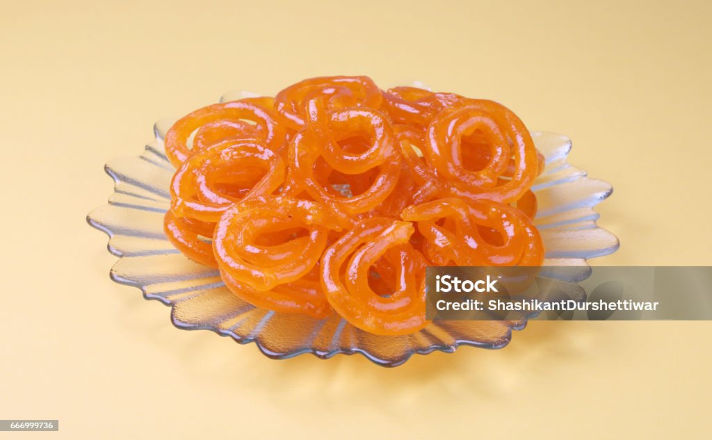

Jalebi
Jalebi is a crispy, deep-fried Indian sweet made from fermented flour batter, soaked in sugar syrup. It has a crunchy exterior with a juicy, syrup-filled center, making it a favorite street food dessert.
Served hot, jalebi pairs well with rabri (thickened sweetened milk) or even a cup of chai.

Ingredients
- For Batter:
- 1 cup all-purpose flour (maida)
- 2 tbsp corn flour
- ½ tsp baking soda
- ¾ cup water
- 1 tsp lemon juice
- ½ tsp turmeric or saffron
- 1 tbsp yogurt
- For Sugar Syrup:
- 1 cup sugar
- ½ cup water
- ¼ tsp cardamom powder
- 1 tsp rose water (optional)
- 1 tsp lemon juice
Steps
- Make Batter:Mix flour, corn flour, baking soda, turmeric, yogurt, and water into a smooth batter. Let it rest for 8-10 hours for fermentation.
- Prepare Sugar Syrup:Boil sugar and water, add cardamom and lemon juice, and keep warm.
- Fry Jalebis: Pour batter into a piping bag or squeeze bottle and pipe spirals into hot oil. Fry until golden and crisp.
- Soak & Serve: Dip in warm sugar syrup for a few seconds, then serve hot.